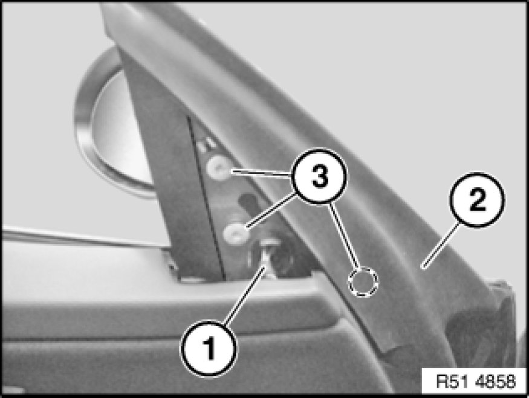
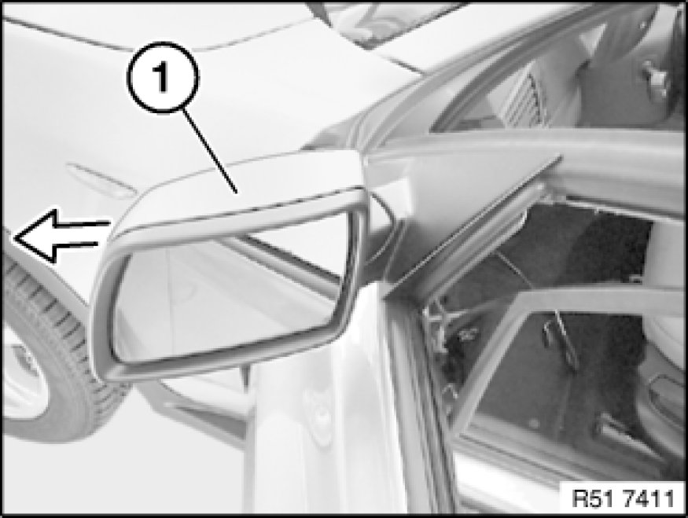
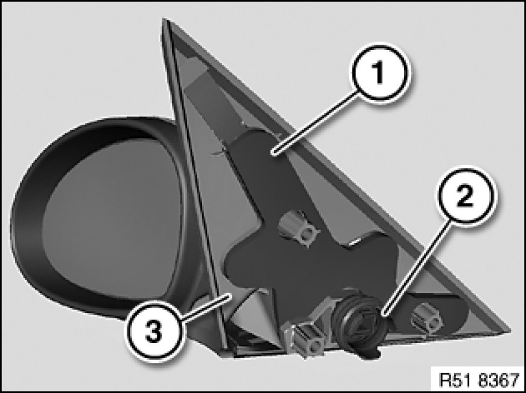

Removing and Installing/Replacing Mirror on Left or Right Front Door
51 16 000 - Removing and installing or replacing mirror on left or right front door

Necessary preliminary tasks:
- Remove inner corner trim Removing and Installing/Replacing Inside Corner Trim on Front Door
Note:
On version with speaker, corner trim can remain hanging over door trim panel.

Important!
Risk of damage!
Secure mirror against falling down.
Disconnect plug connection (1).
Fold seal (2) to one side slightly and release screws (3).
Tightening torque 51 16 1AZ Specifications.
Installation:
Rubber grommet for plug connection (1) must be correctly seated on door.
Seal (2) must be correctly seated on door trim panel and door.

Remove mirror (1) outwards.
Installation:
Check function.

Installation:
Seals (1 and 2) at the rear-view mirror (3) must not be omitted or damaged.